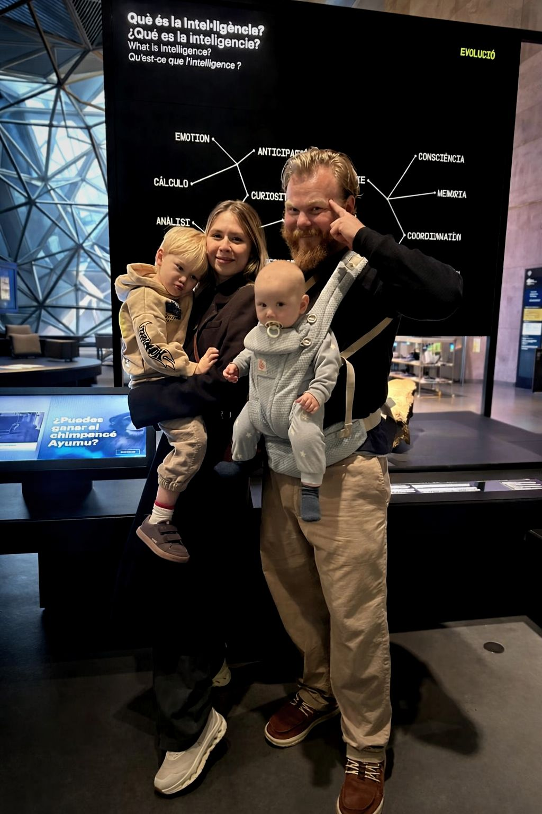

How We Became Barceloneses
Como nos convertimos en barceloneses
Com ens vam convertir en barcelonins
Our love story with Barcelona began long before we moved here. As a professional in the AI and IoT sectors, Dima visited Barcelona regularly for international forums like the Smart City Expo and IoT World Congress, building partnerships with Catalan companies and collaborating with the Barcelona City Council.
When the war started in Ukraine in 2022, we knew where our family belonged. After a brief stop in Poland, we came to the city that had always felt like home. That was almost four years ago — and we've never looked back.
Today we hold Spanish residence permits, our youngest son Adam was born here, and we are on the path to obtaining Spanish passports. Barcelona is not a stop for us — it is our destination.
Nuestra historia de amor con Barcelona comenzo mucho antes de mudarnos. Como profesional en los sectores de IA e IoT, Dima visitaba Barcelona regularmente para foros internacionales como el Smart City Expo y el IoT World Congress, creando alianzas con empresas catalanas y colaborando con el Ayuntamiento de Barcelona.
Cuando empezo la guerra en Ucrania en 2022, supimos donde pertenecia nuestra familia. Tras una breve parada en Polonia, llegamos a la ciudad que siempre habia sentido como nuestro hogar. Eso fue hace casi cuatro anos — y nunca hemos mirado atras.
Hoy tenemos permisos de residencia espanoles, nuestro hijo menor Adam nacio aqui, y estamos en camino de obtener pasaportes espanoles. Barcelona no es una parada — es nuestro destino.
La nostra historia d'amor amb Barcelona va comencar molt abans de mudar-nos. Com a professional en els sectors d'IA i IoT, en Dima visitava Barcelona regularment per a forums internacionals com el Smart City Expo i l'IoT World Congress, creant aliances amb empreses catalanes i col-laborant amb l'Ajuntament de Barcelona.
Quan va comencar la guerra a Ucraina el 2022, vam saber on pertanyia la nostra familia. Despres d'una breu parada a Polonia, vam arribar a la ciutat que sempre havia semblat casa nostra. Aixo va ser fa gairebe quatre anys — i mai hem mirat enrere.
Avui tenim permisos de residencia espanyols, el nostre fill petit Adam va neixer aqui, i estem en cami d'obtenir passaports espanyols. Barcelona no es una parada — es la nostra destinacio.

.jpg)
We fell in love with the architecture, the museums, and above all — the people. The way Catalans treat each other, the balance of life here. This is what makes Barcelona perfect for our family.
Dima & Ksenia LevinNos enamoramos de la arquitectura, los museos y, sobre todo, de la gente. La forma en que los catalanes se tratan entre si, el equilibrio de vida aqui. Esto es lo que hace que Barcelona sea perfecta para nuestra familia.
Dima y Ksenia LevinEns vam enamorar de l'arquitectura, els museus i, sobretot, de la gent. La manera com els catalans es tracten entre ells, l'equilibri de vida aqui. Aixo es el que fa que Barcelona sigui perfecta per a la nostra familia.
Dima i Ksenia Levin